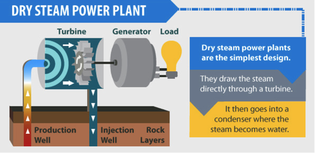
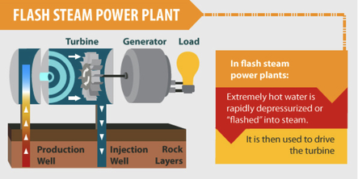
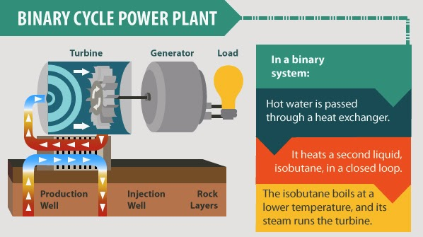

Quick Links
More Geothermal Information
How it is produced
How it works/produced
There are three major types of geothermal plants:
Direct Dry Steam
Steam plants use hydrothermal fluids that are primarily steam. The steam goes directly to a turbine, which drives a generator that produces electricity. The steam eliminates the need to burn fossil fuels to run the turbine. (Also eliminating the need to transport and store fuels!) This is the oldest type of geothermal power plant. It was first used at Lardarello in Italy in 1904. Steam technology is used today at The Geysers in northern California, the world's largest single source of geothermal electricity. These plants emit only excess steam and very minor amounts of gases
Direct Dry Steam Flash and Double Flash Cycle
Hydrothermal fluids above 360°F (182°C) can be used in flash plants to make electricity. Fluid is sprayed into a tank held at a much lower pressure than the fluid, causing some of the fluid to rapidly vaporize, or "flash." The vapor then drives a turbine, which drives a generator. If any liquid remains in the tank, it can be flashed again in a second tank (double flash) to extract even more energy.
Flash Cycle Binary Cycle
Most geothermal areas contain moderate-temperature water (below 400°F). Energy is extracted from these fluids in binary-cycle power plants. Hot geothermal fluid and a secondary (hence, "binary") fluid with a much lower boiling point than water pass through a heat exchanger. Heat from the geothermal fluid causes the secondary fluid to flash to vapor, which then drives the turbines. Because this is a closed-loop system, virtually nothing is emitted to the atmosphere. Moderate-temperature water is by far the more common geothermal resource, and most geothermal power plants in the future will be binary-cycle plants.
Binary Cycle
Geothermal Applications
- District heating systems
- Direct use and district heating systems use hot water from springs or reservoirs located near the surface of the earth. Ancient Roman, Chinese, and Native American cultures used hot mineral springs for bathing, cooking, and heating. Today, many hot springs are still used for bathing, and many people believe the hot, mineral-rich waters have natural healing powers.
- Geothermal energy is also used to heat buildings through district heating systems. Hot water near the earth's surface is piped directly into buildings for heat.A district heating system provides heat for most of the buildings in Reykjavik, Iceland.
- Industrial Applications
- Industrial applications of geothermal energy include food dehydration, gold mining, and milk pasteurizing. Dehydration, or the drying of vegetable and fruit products, is the most common industrial use of geothermal energy.
- Geothermal electricity generation
- The United States leads the world in the amount of electricity generated with geothermal energy. Geothermal electricity generation requires water or steam at high temperatures (300° to 700°F). Geothermal power plants are generally built where geothermal reservoirs are located, within a mile or two of the earth's surface. In 2016, U.S. geothermal power plants produced about 17.4 billion kilowatthours (kWh), or 0.4% of total U.S. electricity generation. In 2016, seven states had geothermal power plants.
Geothermal Advantages
-
It’s eco-friendly
Unlike fossil fuel plants, geothermal energy plants do not involve any form of combustion. This means they give off significantly few amounts of greenhouse gasses. Binary geothermal power plants, which are the most common in the world together, along with their flash binary counterparts emit close to zero greenhouse gas. Even dry steam geothermal power plants are more eco-friendly than fossil-fuel based power plants.
-
Renewable power source
Geothermal power generation injects a sense of reliability to the national power system. Geothermal energy can be generated as a base-load renewable energy resource, which means production occurs 24/7 despite changing weather patterns, thereby offering an exceptionally reliable and constant source of green energy. As a base-load source of power, geothermal energy is primed to take the place of coal in the traditional utility system.
-
Creates new jobs
Initiation of geothermal projects spurs the economy of rural areas, which are typically characterized by unemployment, thereby creating new jobs. A good example is the plan initiated in 2012 to set up a new power complex in Imperial Valley, California, a state that was experiencing the lowest unemployment rates in the United States. The planned investment involved injection of about $1 billion, which was projected to bolster the economy of the area. The project materialized and took about 4 years to complete.
-
Widely available
The earth’s internal heat is available around the world. The only limitation is the capability to extract the energy. However, with advances in technology (geothermal heat pumps), individuals have been able to harvest this hot water from the reservoir below the earth to heat homes and businesses. Even so, advance resources are needed for converting this heat into electricity at individual level. With the rapid growth of technology, economic systems will be developed to convert this abundant heat into electricity by individuals in the near future.
-
Significant savings on your utility bills
Installation of geothermal energy systems requires high upfront capital investments compared to traditional systems due to the buried loop system. Some homeowners shy away from installing geothermal systems due to this initial cost, but fail to view the bigger picture. When the geothermal system is fully operational, you’ll witness significant reduction in your utility bill (by up to 50%), plus they require low maintenance costs. Most institutions tie the upfront cost of installing a geothermal system to your monthly mortgage remittances or other interest financing alternatives. The savings accrued from your utility bills could be enough to offset the increase in your loan payment, offering you additional cash flow.
-
No sound pollution
A geothermal system uses exactly the same principles as a freezer or refrigerator. It operates quietly. It’s a good system to maintain a good relationship with your neighbors. Traditional heating and cooling systems produce a lot of noise that can irritate you and your neighbors causing unnecessary disagreements.
Geothermal Disadvantages
-
High initial capital costs
The cost of drilling wells to the geothermal reservoir is very expensive. Add the cost of heating, and cooling system installation and the cost goes even higher. Although there is predictable Return On Investment (ROI), it might not happen fast. The cost of installing a geothermal heat pump in a basic home ranges from $10,000 to $20,000, which can pay off itself over time (5 to 10 years).
-
May release harmful gases
Underneath the earth’s surface, there is a substantial amount of greenhouse gasses. Harnessing of the heat can potentially lead to the migration of these gasses to the surface of the earth and pollute the air. These kinds of emissions are prevalent and higher where geothermal energy power plants are situated and are linked to silica and sulfur dioxide emissions. To add to that, the reservoir may contain toxic heavy metals such as arsenic, boron, and mercury.
-
Suited to particular region
It’s hard to find remarkable geothermal reservoirs. Geothermal energy accounts for about one-third of Iceland and Philippines’ electricity needs. The downside is that good sites for geothermal energy generation occur far away from cities or populations. First, you must find a site that has the right type of hot rocks. Just any rock won’t work because certain rocks are too hard to drill through. The rocks should also occur within a reasonable depth to make drilling down more feasible. The best sites for geothermal energy production are high volcanic areas.
-
Geothermal heat pumps have to be powered
Although geothermal energy is a cheap alternative for heating and cooling homes, geothermal heat pumps require electricity to operate. If you install an inefficient geothermal heat pump, you may witness a spike in your electricity bills.
-
Extremely high temperatures required
Geothermal energy production is not an easy pursuit. Drilling into hot rocks is a daunting task. For any geothermal process to start, the required temperature must be present (the very least is 350 degrees Fahrenheit). A temperature lower than 350 degrees Fahrenheit may not be able to generate geothermal energy.
-
Can cause surface instability
Construction of geothermal power plants has the potential to cause surface instability and trigger earthquakes. Conventional geothermal power plant construction involves drilling hot rock that contains trapped water or steam in its pores spaces and natural fractures. When these fractures are intersected by a drilled hole, the trapped water erupts as steam due to instant drop in pressure. The drilling its self may not trigger earthquakes, but the rupturing of steam and subsequent return of the used water to the hot water reservoir could. The cycle leads to instabilities along fracture lines resulting to an earthquake.